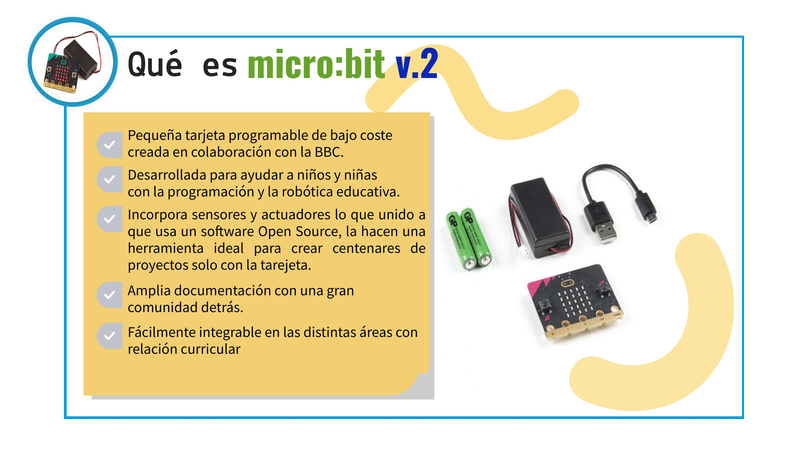

¿Qué es Micro:bit?
La placa micro:bit v.2, la segunda versión de esta placa programable creada con una clara intención educativa, con un tamaño reducido, un aspecto llamativo y con múltiples sensores y actuadores la convierten en la placa ideal para comenzar la programación en Educación Primaria. Estas características, junto a las múltiples posibilidades de programación como el entorno por bloques MakeCode de Microsoft o Microblocks la hacen un recurso valiosa para iniciarse en la robótica, el pensamiento computacional y la programación.
